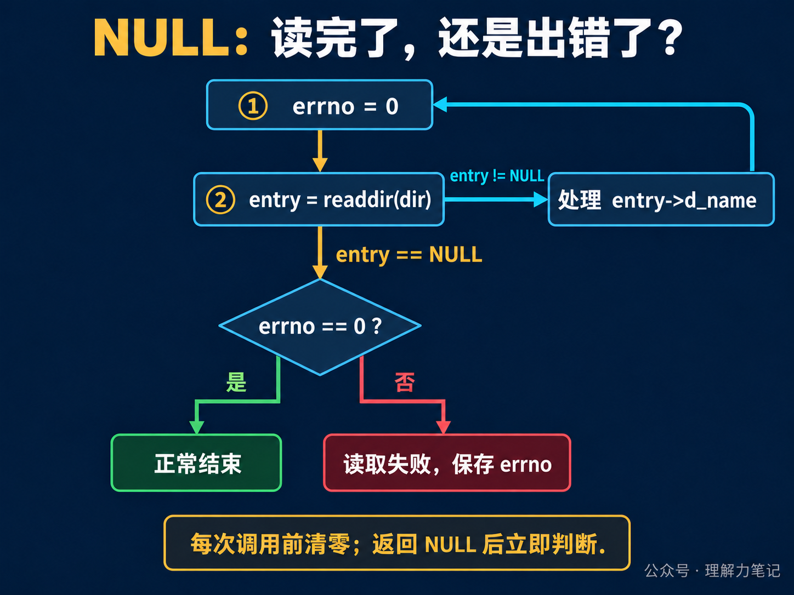
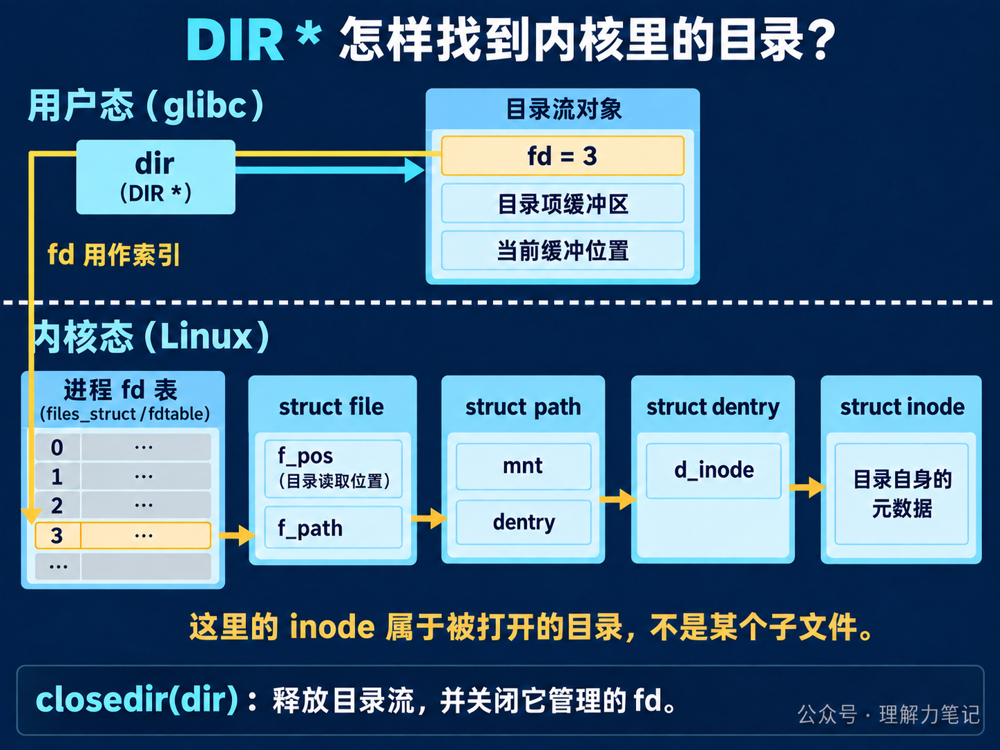

readdir 返回 NULL：读完了，还是出错了？循环调用 readdir，拿到名字就打印，返回 NULL 就退出。这样写能列出文件，但程序可能只读了一半，就把读取失败当成了正常结束。
结论： POSIX
readdir用NULL同时表示“目录读完”和“读取失败”。每次调用前将errno清零；返回NULL后立即检查：errno == 0才是正常结束，否则保存错误并报告。无论读完还是中途退出，已经打开的目录流都要用closedir关闭。
这篇文章怎么读？
只想写对遍历循环，看第一章；想知道它怎样从内核拿到名字，接着看第二章。
| 你是谁 | 看哪一章 | 会得到什么 |
|---|---|---|
| 搜索者 / 被推荐者 | 第一章 · 先解决问题 | 能运行的遍历循环与错误判断 |
| 学习者 | 第二章 · 机制解释 | DIR *、fd、内核目录对象与缓冲区的关系 |
| 编程者 | 第三章 · 工程使用 | 名字如何保存、资源怎么关闭、并发边界 |
| 求职者 | 第四章 · 面试提炼 | 说清 NULL 的两种含义与缓冲机制 |
opendir(path) 打开一个目录流：可以逐项读取目录内容的遍历状态。它返回 DIR *。把这个指针交给 readdir，每次成功会得到一个 struct dirent *，其中 d_name 就是这一项的名字。
下面的程序只列一层目录，不进入子目录。它跳过 . 和 ..，保留 .hidden 这样的隐藏文件，也会列出符号链接的名字。
保存为 list_dir.c：
这里把 errno = 0 放在循环内部，紧挨着 readdir。处理上一项时，日志、文件检查等操作可能留下错误码；而 readdir 正常读到末尾时不会替你清掉它。只在循环外清零一次，后面就可能把旧错误当成本次读取错误。

返回非空指针时，处理这条记录；只有返回 NULL，才用 errno 区分结束与错误。先保存错误码，再打印日志和关闭目录，避免清理操作改变它。
本次在 macOS Darwin 23.6.0、Apple clang 16.0.0 上运行。示例使用 POSIX 接口；第二章的 Linux/glibc 机制另按源码核对，没有把它当成本机系统调用跟踪结果。
在保存了 list_dir.c 的目录执行以下命令。样本放入新建的临时目录，不覆盖已有文件：
实际输出：
顺序由文件系统决定，不能据此认为隐藏文件总是排在前面。subdir 和 link 都只作为名字出现；遍历没有进入子目录，也没有打开链接目标。
再运行下面三组命令：
实际结果如下。空目录没有名字输出；另外两组是 opendir 失败，不是读完目录：
本地磁盘很难稳定制造“读到一半才失败”。为验证这条分支，还单独使用测试包装函数：真实返回第一条非点目录项后，下一次模拟 readdir 返回 NULL 并设置 EIO。程序输出一个名字后报告 readdir sample: Input/output error，退出状态为 1。这只证明程序的错误分支有效，不代表本机真的发生了磁盘 I/O 故障。
DIR *、fd 和 struct dirent * 经常一起出现，先给它们各自一个位置：DIR * 指向用户态的目录流对象；fd 是这个对象管理的文件描述符；struct dirent * 指向本次返回的目录项记录。
下面以 glibc 2.40 和 Linux 6.6 为例。结构体字段用于解释实现，应用程序仍只使用公开接口。

先看图的上半部分。opendir 会打开目录，分配目录流对象，把 fd、缓冲区和缓冲位置放在一起。以后传入 dir，库函数就知道该用哪个 fd、下一条记录读到哪里了。图中的 fd=3 只是示意，实际编号由运行时决定。
再沿 fd 往下看：数字 3 用来索引进程的 fd 表，对应的表项指向一个 struct file。这个内核对象记录本次打开的状态，其中 f_pos 用于保存目录遍历位置。
struct file 里的 f_path 是一个 struct path，包含挂载点 mnt 和目录项指针 dentry；dentry->d_inode 再指向目录自己的 inode。inode 保存这个目录的类型、权限等元数据。
这里打开的是 sample 目录本身。读到 a.txt 的名字，不等于又为 a.txt 创建了一个 fd。struct dirent 是交给程序的目录项记录，也不是图中的内核 struct dentry；名字相近，用途不同。
看图中的第一步。缓冲区已经用完时，glibc 通过 getdents64 系统调用，请内核再填一批目录项记录。Linux 根据 fd 找到 struct file，经过 VFS 的 iterate_dir，调用文件系统提供的目录遍历方法。VFS 是内核对不同文件系统提供的统一接口层。
返回的这一批记录包含名字等信息，并不包含每个文件的正文内容。glibc 留住这批记录，再把第一条的地址交给应用程序。
第二次调用时，如果缓冲区还有记录，glibc 直接取下一条。一次 readdir 调用不一定触发一次系统调用。 应用程序看到的是“一项一项读”，内核可以是“一批一批给”。
这也解释了为什么有两个位置：目录流中的缓冲位置，表示这批记录交出去多少条；内核 struct file.f_pos，表示下一批从哪里继续。内核可能已经走到这一批的末尾，程序却还在处理其中第一条。不要把二者当成同一个偏移量，也不要把目录记录中的 d_off 当成普通文件字节偏移量来计算。
缓冲区耗尽，再次补充时，如果 getdents64 返回 0，glibc 就知道没有更多记录，readdir 返回 NULL，并保留调用前的 errno。如果补充记录发生需要上报的错误，它同样返回 NULL，但留下错误码。
所以第一章的判断必须分两步：先看有没有记录，再在没有记录时检查错误码。程序不能仅凭一个空指针判断“已经全部读完”。
readdir 返回的存储由目录流管理，不要 free(entry)。同一目录流的后续读取可能覆盖它，关闭目录流后也不能再使用它。
需要把名字收集起来排序，就在当前记录有效时复制 d_name。例如使用 strdup 时检查分配失败，并约定由列表持有者释放副本。仅把 entry 或 entry->d_name 指针塞进数组，不能保证之后拿到的仍是原来的名字。
还有一个容易混淆的路径问题：遍历 sample 得到的 d_name 是 a.txt，并不是 sample/a.txt。直接 stat(entry->d_name, ...) 会相对于进程当前目录查找。需要继续操作该项时，要明确路径基准；fstatat(dirfd(dir), entry->d_name, ...) 可以沿用已经打开的目录，符号链接是否跟随则由标志控制。目录 fd 和这些接口后续会单独展开。
| 资源 | 获得方式 | 谁负责释放 |
|---|---|---|
目录流 DIR * 及其底层 fd |
opendir 成功 |
调用者执行一次 closedir |
当前 entry 和 d_name |
readdir 成功 |
目录流管理，不单独释放 |
| 自己复制的名字 | strdup 等分配操作成功 |
保存副本的一方 free |
opendir 失败时没有目录流可关闭；成功以后，无论正常结束、读取失败还是输出失败，都汇入 closedir。第一章的程序采用这个结构，并检查关闭结果。dirfd(dir) 返回的是借用的描述符，不要提前 close 它再调用 closedir。
程序把读取错误统一当作本次遍历失败，包括实现可能报告的中断错误；不会无限重试，也不会把已经打印的部分结果宣称为完整清单。命令行调用方应同时检查退出状态。最后的 fflush(stdout) 则用来发现延迟到刷新输出缓冲区时才暴露的写入错误。
读取期间，其他进程可能增加或删除目录项。POSIX 不保证后续一定能看到这些变更，因此读到名字之后的打开、查询或删除，仍要分别检查返回值。readdir 本身也不保证按名字排序，需要排序就收集名字后另行处理。
多线程如果共享一个 DIR *，应把“读取并消费或复制当前记录”作为一个整体同步。只锁住 readdir 调用，解锁后再慢慢使用返回指针，可能遇到别的线程覆盖存储。不要为了线程安全改用已过时的 readdir_r。
本篇只读取名字。d_type 可能为 DT_UNKNOWN，不能据此写出适用于所有文件系统的类型判断；这一点留给文件与目录第 4 篇。
readdir 返回 NULL 就是读完了吗？ 还不能判断。每次调用前将 errno 清零；返回 NULL 且 errno 仍为 0 才是正常结束，否则是读取错误。
每读一个名字，都要进入一次内核吗？ 在这里分析的 glibc/Linux 实现中，目录项会批量读入缓冲区，后续调用可以直接从用户态缓冲区取下一条。
为什么不能保存返回指针，等遍历完再处理？ 它指向目录流管理的存储，后续读取可能覆盖，关闭目录流后更不能继续使用。需要保留的是当时的名字副本。
本文为公众号「理解力笔记」原创。转载请联系作者，并保留出处。